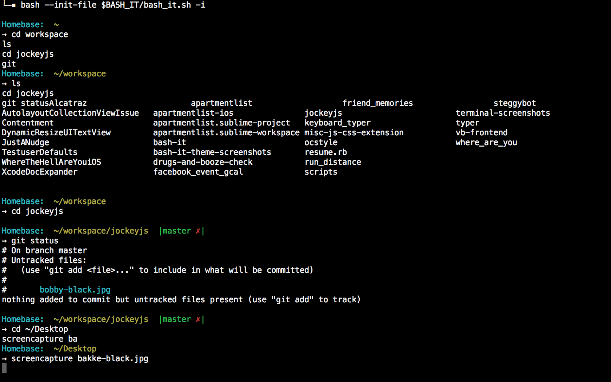

Eis aqui uma foto de um trabalho usando os comandos do Git Bash no Linux:

(Arraste o mouse na imagem para ampliar)
Também há vários códigos! Aqui está uma lista sobre alguns códigos e o que eles fazem.
Configuração
git config --global user.name "[Seu Nome]": Define o nome de usuário global para os commits.
git config --global user.email "[Seu Email]": Define o email global para os commits.
git config --global core.autocrlf input: Configura a conversão automática de terminações de linha no Linux.
q
git config --list: Lista todas as configurações do Git.
Operações Básicas
git init: Inicializa um repositório Git em um diretório.
git clone [URL]: Clona um repositório Git existente para o diretório local.
git add [arquivo(s)]: Adiciona arquivos ao índice para prepará-los para o commit.
git commit -m "[mensagem]": Cria um novo commit com os arquivos que foram adicionados ao índice.
git status: Exibe o estado atual do repositório.
git log: Exibe o histórico de commits do repositório.
Branches
git branch [nome_da_branch]: Cria uma nova branch.
git checkout [nome_da_branch]: Muda para a branch especificada.
git merge [nome_da_branch]: Mescla a branch especificada na branch atual.
git branch -d [nome_da_branch]: Deleta a branch especificada.
Repositório Remoto
git remote -v: Exibe os repositórios remotos associados ao repositório local.
git remote add [nome_remoto] [URL]: Adiciona um novo repositório remoto.
git push [nome_remoto] [branch_local]: Envia as alterações locais para o repositório remoto.
git pull [nome_remoto] [branch_remota]: Puxa as alterações do repositório remoto para o repositório local.
Outros Comandos
git diff: Exibe as diferenças entre alterações em arquivos.
git stash: Guarda temporariamente as alterações locais.
git tag [nome_tag]: Cria uma nova tag para o commit atual.
git reset [opções] [commit]: Reseta o HEAD para um commit específico.
Esses comandos podem ser usados em qualquer terminal Linux para trabalhar com repositórios Git e realizar operações de controle de versão em seus projetos.